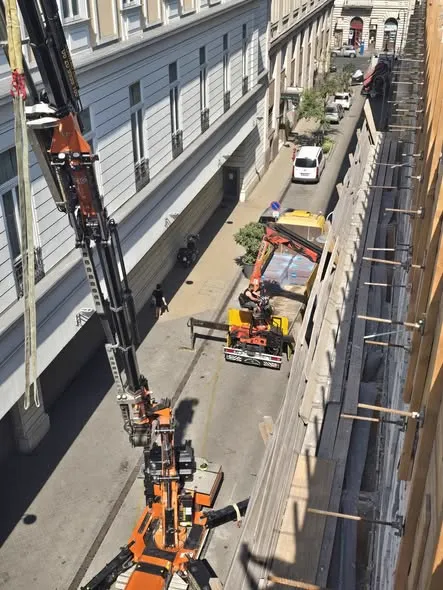

Bejegyzés
2009A társaság megalakul
A cégbíróság 2009-ben jegyezte be a társaságot. Ez a dátum áll a cégkivonatban, és ez az, amit egy átvilágítás elsőként lát. Az akkori tevékenységi kör nem az volt, ami ma.
forrás: cégkivonat
Oldalak
Főoldal Mit építünk Hogyan építünk Foghíjbeépítés Műemlék és homlokzat Referenciák Számok Rólunk KapcsolatElérhetőség
+36 70 403 7217Főoldal/Rólunk
Ez az oldal nem cégtörténet. Azt tisztázza, mit mutat a cégkivonatunk, mit nem mutat, és hol van a kettő között a valóság. Aki nagy értékű beruházást bíz kivitelezőre, ezt úgyis leellenőrzi. Jobb, ha tőlünk hallja először.
A rövid változat
Cégadatot bárki lekérdez. Ezért mi mondjuk el előbb.
Amit egy átvilágítás az első negyedórában kihoz
A cégjegyzékszámunk 2009-es, az építőipari profil viszont 2023 óta él. Ha ezt egy céginformációs riportból tudja meg, az kellemetlen pillanat. Ha tőlünk, akkor egy megválaszolt kérdés, és megy tovább a beszélgetés.
Az idővonalban ott a három dátum és a hozzájuk tartozó magyarázat. A lap alján a teljes törzsadat, ugyanabban az alakban, ahogy a cégkivonatban szerepel.
Idővonal
Négy sor. Az első három dátum a cégkivonatból, a negyedik magyarázat tőlünk. Ez utóbbi a fontosabb.
Bejegyzés
2009A cégbíróság 2009-ben jegyezte be a társaságot. Ez a dátum áll a cégkivonatban, és ez az, amit egy átvilágítás elsőként lát. Az akkori tevékenységi kör nem az volt, ami ma.
Fordulópont
20232023-ban a tulajdonosi kör lecserélődött, és ezzel együtt a cég profilja is. A vezérigazgató Antal-Köz Csaba. Az építőipari tevékenység ettől az évtől számít, nem 2009-től.
A két dátum között eltelt idő nem a mi építőipari múltunk, ezért nem is soroljuk oda. Aki tizenöt év cégmúltat ír egy ilyen cégkivonat mellé, azt az első lekérdezés megfogja.
Azóta
2023ótaEgyetlen dolgot csinálunk: generálkivitelezést és monolit vasbeton szerkezetépítést Budapesten és az agglomerációban. Nyolctól ötven lakásig, foghíjbeépítéssel, tetőtér-ráépítéssel, műemléki homlokzattal és csarnokkal.
Nincs saját ingatlanfejlesztésünk és nincs kereskedelmi águnk. Aki minket bíz meg, nem lesz közben a versenytársunk is ugyanazon a telekpiacon.
A negyedik sor
~24évA referenciamunkák mögött mintegy huszonnégy évnyi szakmai múlt áll. Ez a múlt a vezetők személyéhez és a korábbi cégeikhez tartozik, nem ehhez a cégjegyzékszámhoz. A kettő nem ugyanaz, és nem is mutatjuk annak.
Amit helyette adunk: névre szóló szakmai önéletrajzot, a felelős műszaki vezető kamarai nyilvántartási számát, és olyan korábbi beruházók elérhetőségét, akik ehhez hozzájárultak. Ezek visszakereshetők. Egy évszám a fejlécben nem az.
Miért írjuk ki
Mert a következményt a beruházó viseli, ha menet közben derül ki. Aki a cégtörténetét kerekíti, a pótmunkalistát is kerekíteni fogja. Egy építkezésen a bizalom nem hangulat kérdése, hanem az, hogy a leírt és a kideríthető adat fedi-e egymást.
Munkamódszer
Négy dolog, amit minden szerződésünkben ugyanúgy csinálunk. Nem ígéret, hanem eljárás, és mind a négy ellenőrizhető menet közben, nem az átadáskor.
Az első ütem fix áron megy a szerkezetkész, vízhatlan épületig. A másodikra, a kulcsátadásig, a tényleges piaci árakon adunk ajánlatot, mert a forint és az euró viszonyát két évre nem lehet becsületesen beárazni. Banki finanszírozásnál a teljes generálkivitelezés kérésre egy szerződésbe kerül.
Minden héten egy oldal megy a beruházónak: hol tartunk, mi csúszik, mi került többe és miért. A költségsor nyitva van, a beszerzési árat is látja. Rossz hírt a hét végén kap, nem a műszaki átadáson.
Az építési napló naprakész, a minőség-kapuk jegyzőkönyve a kapu napján készül el, a mérési jegyzőkönyvek a helyükön vannak. A műszaki ellenőrnek nem tőlünk kell adatot kérnie, egyszerűen megtalálja.
A szerződésben nem cégnév áll, hanem személynév és kamarai NÜJ szám. Az MMK névjegyzékében bárki visszakeresheti, az érvényesség dátumával együtt. Ugyanaz az ember jár ki hetente, és ugyanaz írja alá a naplót.

Egy hétköznap a riportban
Ez a felvétel a sajátunk, egy hétköznap délelőtt készült. A gém az utca fölé fordul, alatta a lezárt sáv, a szemközti ház ablakai néhány méterre. Felvonulási terület nincs, az anyag közterületről érkezik, a sávot órára kapjuk meg.
Egy ilyen napról a heti riportban nem az szerepel, hogy halad. Az szerepel, hogy melyik órában mi történt, mi maradt el, és az mit tol el a következő héten. Ebből lesz a beruházónak döntése, nem hangulata.
Partnerek
Négy szereplő, akiket nem a projekt közepén keresünk meg. Mindegyik külsős, és pontosan ezért ér valamit, amit leír vagy aláír.
kutatóablak · színrétegvizsgálat · pótlás
Miért külsős
A restaurátor mondja meg, mi maradhat és mi pótlandó. Ha ezt a kivitelező döntené el, a saját munkájáról adna szakvéleményt.
Miért állandó
Ugyanazokkal a műhelyekkel dolgozunk évek óta. Ismerik a pesti tagozatokat, és a mintavétel után nem kell újratanulniuk a házat.
engedélyezés · hatósági egyeztetés
Miért külsős
Az örökségvédelmi engedélykérelmet szakértői véleménnyel kell alátámasztani. A hatóság a független aláírást fogadja el, nem a kivitelezőét.
Miért állandó
Aki már vitt végig velünk több ügyet, tudja, melyik ponton szokott megállni egy kérelem. Ez a beruházó oldalán hetekben mérhető.
állapotfelvétel · kárvita
Miért külsős
A szomszéd épület állapotát a munkakezdés előtt kell rögzíteni, jegyzőkönyvvel és fotóval. Ez akkor bizonyíték, ha nem mi készítettük.
Miért állandó
Az induló állapotot ugyanaz a szakértő veszi fel, aki egy későbbi vitában is nyilatkozik. A folytonosság a beruházót védi, nem minket.
zsaluzás · vasszerelés · szakipar
Miért külsős
Nem tartunk fenn olyan létszámot, amit két projekt között is fizetni kell. Az ár ettől lesz tartható, a minőséget pedig a minőség-kapuk tartják, nem a munkaviszony.
Miért állandó
Ugyanazok a brigádok jönnek vissza, mert a szerződés szerinti napon kapják a pénzüket. Nyolc napon túl lejárt tartozásunk nincs, ezért akkor is van kihez fordulni, amikor kevés az ember a piacon.
| Adat | Érték | Forrás |
|---|---|---|
| Cégnév | VAC-Team Építő Zrt. | cégnyilvántartás |
| Cégjegyzékszám | 13-10-042476 | cégnyilvántartás |
| Adószám | 14658022-2-13 | NAV törzsadat |
| Székhely | 2161 Csomád, Kossuth Lajos út 79. | cégkivonat |
| Vezérigazgató | Antal-Köz Csaba | cégkivonat |
| Működési terület | Budapest és agglomeráció | saját nyilatkozat |
Személyes egyeztetés
Egy egyórás egyeztetésen ott ül a vezérigazgató és a projektre kijelölt felelős műszaki vezető. Önéletrajzot, kamarai számot és korábbi beruházói elérhetőséget hozunk, prospektust nem.